Rows: 2,840
Columns: 34
$ student.id <dbl> 1, 2, 3, 4, 5, 6, 7, 8, 9, 10, …
$ school.type <chr> "Public", "Private", "Public", …
$ gender <chr> "หญิง", "ชาย", "ชาย", "ชาย", "หญิ…
$ location <chr> "ภาคใต้", "ภาคกลาง", "ภาคตะวันออก…
$ ach <dbl> 56.71339, 56.78130, 41.52452, 2…
$ learn.style <chr> "เรียนผ่านการอ่าน-เขียน", "เรียนผ่านก…
$ study.hr <dbl> 8.8, 6.8, 7.6, 3.1, 8.9, 8.7, 5…
$ extra.act <chr> "ชมรมวิชาการ", "กีฬา", "กีฬา", "ชม…
$ extra.act.hr <dbl> 1.5, 2.2, 3.2, 4.0, 2.3, 1.3, 0…
$ self.esteem <dbl> 4.6, 5.9, 8.6, 8.3, 14.0, 4.9, …
$ social.skill <dbl> 8.0, 11.8, 8.1, 7.0, 16.0, 8.8,…
$ satisfac <dbl> 2, 5, 2, 3, 4, 2, 1, 2, 2, 1, 5…
$ sch.belong_ordinal <dbl> 3, 1, 5, 3, 5, 3, 1, 3, 3, 1, 5…
$ sch.absent <dbl> 13, 12, 10, 10, 5, 11, 14, 15, …
$ par.involv_ordinal <dbl> 3, 4, 3, 1, 5, 3, 1, 1, 3, 1, 2…
$ motiv_ordinal <dbl> 3, 3, 2, 3, 5, 3, 1, 1, 1, 1, 4…
$ acad.goal <chr> "เพื่อศึกษาต่อในประเทศ", "เพื่อศึกษาต่อ…
$ time.manage1 <dbl> 11.0, 10.4, 11.4, 8.3, 12.7, 12…
$ time.manage2 <dbl> 6.7, 9.0, 8.2, 3.2, 19.5, 9.6, …
$ acad.axiety1 <dbl> 3, 3, 2, 3, 4, 2, 2, 3, 2, 2, 5…
$ acad.axiety2 <dbl> 3, 5, 2, 3, 4, 3, 1, 3, 1, 2, 5…
$ acad.axiety3 <dbl> 3, 4, 3, 3, 3, 3, 1, 2, 1, 2, 4…
$ acad.axiety4 <dbl> 1, 3, 2, 3, 3, 1, 2, 1, 2, 3, 5…
$ acad.axiety5 <dbl> 3, 4, 2, 2, 3, 2, 1, 3, 3, 2, 5…
$ teach.sup1 <dbl> 3, 3, 3, 3, 3, 3, 3, 5, 3, 1, 3…
$ teach.sup2 <dbl> 3, 3, 3, 3, 3, 5, 3, 3, 3, 1, 3…
$ teach.sup3 <dbl> 3, 3, 2, 3, 3, 3, 3, 3, 1, 1, 3…
$ teach.sup4 <dbl> 3, 3, 3, 3, 3, 3, 2, 3, 3, 1, 3…
$ teach.sup5 <dbl> 3, 3, 3, 3, 3, 3, 3, 3, 3, 1, 3…
$ lrn.environ1 <dbl> 2, 3, 1, 3, 3, 2, 1, 1, 1, 1, 3…
$ lrn.environ2 <dbl> 2, 5, 1, 3, 3, 2, 1, 2, 3, 1, 5…
$ lrn.environ3 <dbl> 3, 3, 2, 3, 4, 3, 1, 2, 1, 2, 4…
$ lrn.environ4 <dbl> 1, 4, 1, 3, 4, 3, 1, 2, 1, 1, 4…
$ lrn.environ5 <dbl> 1, 4, 3, 3, 3, 1, 1, 2, 2, 1, 3…Week 4: Data Preprocessing I
ผศ.ดร.สิวะโชติ ศรีสุทธิยากร
ภาควิชาวิจัยและจิตวิทยาการศึกษา
คณะครุศาสตร์ จุฬาลงกรณ์มหาวิทยาลัย
learningdata.csv
Feature Engineering
Reformatting predictor values to make them easier for a model to use effectively.
Encodings
Transformations
Encoding Categorical Data into Numerical Format
flowchart LR A[factor]-->B[numeric] C[character]-->B
step_unknow()– กำหนด missing value ในตัวแปรแบบ factor ให้เป็น “unknown”.step_novel()– กำหนดค่า factor level ที่ไม่เคยเห็นมาก่อนให้เป็น “new”.step_other(threshold)– รวม catergories ที่มีจำนวนความถี่น้อยให้เป็นกลุ่มเดียวกันเรียกว่า “other”step_dummy(one_hot)
Interaction Terms (1)
อิทธิพลปฏิสัมพันธ์ (interaction effects) เกิดขึ้นเมื่อความสัมพันธ์/อิทธิพลของตัวแปรอิสระตัวหนึ่งที่มีต่อ y มีค่าที่แตกต่างกันไปคามค่าหรือระดับของตัวแปรอิสระอย่างน้อยอีกตัวหนึ่ง
data |>
ggplot(aes(x=study.hr, y=ach))+
geom_point(alpha = 0.5, shape = 1)+
geom_smooth(method = "lm", se = F, aes(col = self.esteem > 16))+
theme_light()+
theme(panel.grid = element_blank(),
text = element_text(size = 15))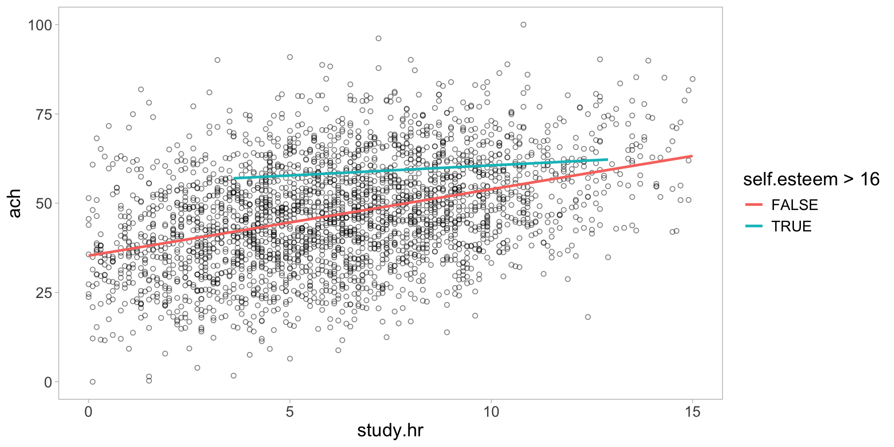
data |>
mutate(
acad_axiety = rowMeans(across(starts_with("acad.axiety")),na.rm=T),
teach_sup = rowMeans(across(starts_with("teach")),na.rm=T),
lrn_environ = rowMeans(across(starts_with("lrn.environ")), na.rm=T)
) |>
ggplot(aes(x=study.hr, y=ach))+
geom_point(alpha = 0.5, shape = 1)+
geom_smooth(method = "lm", se = F)+
facet_wrap(~par.involv_ordinal)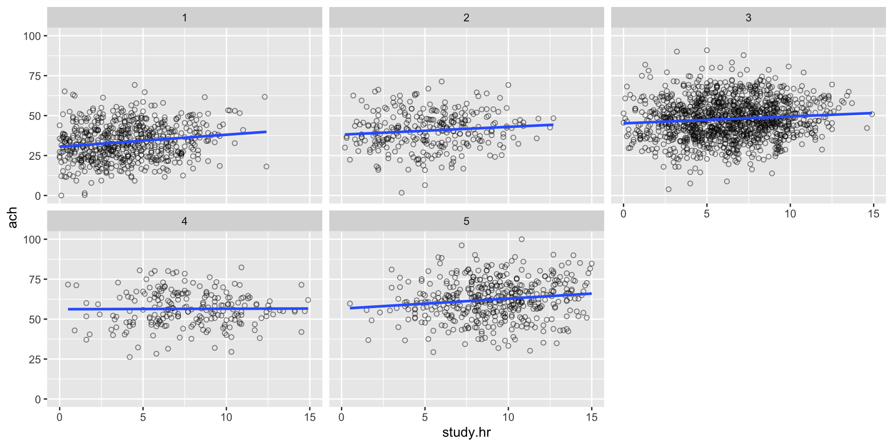
Interaction Terms (2)
ตัวอย่างการเขียน recipe สำหรับ interaction terms
Interaction Terms (3)
Literature Review/Expert Knowledge (Neter et al., 2004)
-
Principle of Interaction Search (Wu and Hamada, 2011)
First Principle: Interaction Hierarchy – higher order interaction มักมีความสัมพันธ์หรือมีผลกระทบต่อค่าทำนายน้อยกว่า lower order interaction และ main effects
Second Principle: Effect Sparsity – มีเพียงส่วนหนึ่งของผลกระทบที่เป็นไปได้ทั้งหมดเท่านั้นที่สามารถอธิบายความแปรปรวน/ทำนายตัวแปรตามได้อย่างมีนัยสำคัญ
Third Principle: Effect Heredity – ปฏิสัมพันธ์ของตัวแปรต่างๆ อาจพิจารณาได้ก็ต่อเมื่อผลกระทบของตัวแปรที่เกิดก่อนปฏิสัมพันธ์นั้นมีประสิทธิภาพในการอธิบายความแปรปรวน/ทำนายตัวแปรตาม

figure1: Effect Sparsity

figure2: Effect Heredity
M. Kuhn and Johnson (2020)
Interaction Terms (4)
-
Simple Screening – ใช้การเปรียบเทียบโมเดลระหว่างโมเดลอย่างง่าย และโมเดลซับซ้อนด้วยค่าสถิติวัดความสอดคล้องเชิงประจักษ์ (fit indices)
- \(R^2, adj-R^2\)
- Deviance-test
- Partial F-test
- AIC, BIC
การเปรียบเทียบความสอดคล้องของโมเดลบน training data มีแนวโน้มที่ผู้วิเคราะห์จะพบกับปัญหา overfitting วิธีการแก้ปัญหาหนึ่งคือใช้การทำ cross-validation
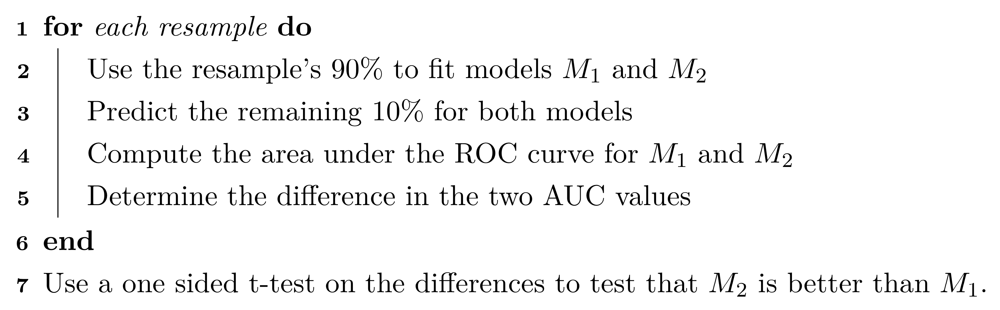Interaction Terms (5)
-
Regularized/Penalized Regression
lasso regression
ridge regression
elastic-net regression
M. Kuhn and Johnson (2020)
Workflow (1)

Workflow (2)
รวมขั้นตอนการ preprocessing กับ การสร้างโมเดลไว้ในที่เดียว
ช่วยให้การสร้างโมเดลสามารถทำซ้ำได้ง่ายขึ้น
library(tidymodels)
# Model specification
model_spec <- logistic_reg() %>%
set_engine("glm")
# Recipe
recipe_spec <- recipe(Class ~ ., data = training_data) %>%
step_normalize(all_numeric_predictors())
# สร้าง workflow
workflow <- workflow() %>%
add_recipe(recipe_spec) %>%
add_model(model_spec)
## model tuning
tuned_results <- workflow %>%
tune_grid(
resamples = vfold_cv(training_data, v = 5),
grid = 10
)
## show best
tuned_results %>%
show_best(metric = "accuracy", n = 5)
## select best
best_params <- tuned_results %>%
select_best(metric = "accuracy")
## finalizing
final_wf <- workflow %>%
finalize_workflow(best_params)
## fitting the final model
final_fit <- final_wf %>%
fit(data = training_data)
final_fit <- final_wf %>%
last_fit(split)กิจกรรม
สร้าง workflow เพื่อ train regression model จากชุดข้อมูล learningdata.csv
library(tidyverse)
library(tidymodels)
data <- read_csv("/Users/choat/Downloads/learningdata.csv")
glimpse(data)Rows: 2,840
Columns: 34
$ student.id <dbl> 1, 2, 3, 4, 5, 6, 7, 8, 9, 10, 11, 12, 13, 14, 15, …
$ school.type <chr> "Public", "Private", "Public", "Private", "Private"…
$ gender <chr> "หญิง", "ชาย", "ชาย", "ชาย", "หญิง", "หญิง", "หญิง", "ห…
$ location <chr> "ภาคใต้", "ภาคกลาง", "ภาคตะวันออกเฉียงเหนือ", "ภาคกลาง"…
$ ach <dbl> 56.71339, 56.78130, 41.52452, 28.66393, 75.28483, 4…
$ learn.style <chr> "เรียนผ่านการอ่าน-เขียน", "เรียนผ่านการลงมือทำ", "เรียนผ่านก…
$ study.hr <dbl> 8.8, 6.8, 7.6, 3.1, 8.9, 8.7, 5.7, 7.9, 5.8, 2.1, 0…
$ extra.act <chr> "ชมรมวิชาการ", "กีฬา", "กีฬา", "ชมรมวิชาการ", "ชมรมวิชาก…
$ extra.act.hr <dbl> 1.5, 2.2, 3.2, 4.0, 2.3, 1.3, 0.9, 1.5, 2.2, 3.7, 3…
$ self.esteem <dbl> 4.6, 5.9, 8.6, 8.3, 14.0, 4.9, 6.1, 11.0, 5.6, 2.5,…
$ social.skill <dbl> 8.0, 11.8, 8.1, 7.0, 16.0, 8.8, 2.1, 6.3, 6.6, 5.0,…
$ satisfac <dbl> 2, 5, 2, 3, 4, 2, 1, 2, 2, 1, 5, 4, 2, 1, 2, 1, 3, …
$ sch.belong_ordinal <dbl> 3, 1, 5, 3, 5, 3, 1, 3, 3, 1, 5, 3, 1, 3, 1, 1, 1, …
$ sch.absent <dbl> 13, 12, 10, 10, 5, 11, 14, 15, 11, 11, 12, 12, 16, …
$ par.involv_ordinal <dbl> 3, 4, 3, 1, 5, 3, 1, 1, 3, 1, 2, 3, 3, 3, 3, 1, 3, …
$ motiv_ordinal <dbl> 3, 3, 2, 3, 5, 3, 1, 1, 1, 1, 4, 3, 1, 1, 1, 1, 3, …
$ acad.goal <chr> "เพื่อศึกษาต่อในประเทศ", "เพื่อศึกษาต่อในประเทศ", "เพื่อศึกษาต่…
$ time.manage1 <dbl> 11.0, 10.4, 11.4, 8.3, 12.7, 12.0, 8.3, 12.5, 12.5,…
$ time.manage2 <dbl> 6.7, 9.0, 8.2, 3.2, 19.5, 9.6, 0.3, 1.6, 7.7, 1.6, …
$ acad.axiety1 <dbl> 3, 3, 2, 3, 4, 2, 2, 3, 2, 2, 5, 3, 3, 1, 3, 2, 3, …
$ acad.axiety2 <dbl> 3, 5, 2, 3, 4, 3, 1, 3, 1, 2, 5, 3, 3, 1, 1, 1, 3, …
$ acad.axiety3 <dbl> 3, 4, 3, 3, 3, 3, 1, 2, 1, 2, 4, 3, 3, 1, 3, 1, 3, …
$ acad.axiety4 <dbl> 1, 3, 2, 3, 3, 1, 2, 1, 2, 3, 5, 3, 2, 1, 3, 1, 3, …
$ acad.axiety5 <dbl> 3, 4, 2, 2, 3, 2, 1, 3, 3, 2, 5, 3, 3, 2, 2, 2, 3, …
$ teach.sup1 <dbl> 3, 3, 3, 3, 3, 3, 3, 5, 3, 1, 3, 3, 3, 3, 3, 2, 3, …
$ teach.sup2 <dbl> 3, 3, 3, 3, 3, 5, 3, 3, 3, 1, 3, 3, 3, 3, 2, 2, 3, …
$ teach.sup3 <dbl> 3, 3, 2, 3, 3, 3, 3, 3, 1, 1, 3, 3, 3, 2, 1, 3, 3, …
$ teach.sup4 <dbl> 3, 3, 3, 3, 3, 3, 2, 3, 3, 1, 3, 3, 3, 3, 3, 2, 2, …
$ teach.sup5 <dbl> 3, 3, 3, 3, 3, 3, 3, 3, 3, 1, 3, 3, 3, 3, 1, 3, 3, …
$ lrn.environ1 <dbl> 2, 3, 1, 3, 3, 2, 1, 1, 1, 1, 3, 3, 3, 1, 3, 1, 2, …
$ lrn.environ2 <dbl> 2, 5, 1, 3, 3, 2, 1, 2, 3, 1, 5, 3, 3, 1, 2, 1, 3, …
$ lrn.environ3 <dbl> 3, 3, 2, 3, 4, 3, 1, 2, 1, 2, 4, 3, 3, 1, 3, 1, 3, …
$ lrn.environ4 <dbl> 1, 4, 1, 3, 4, 3, 1, 2, 1, 1, 4, 3, 3, 1, 3, 1, 2, …
$ lrn.environ5 <dbl> 1, 4, 3, 3, 3, 1, 1, 2, 2, 1, 3, 3, 3, 2, 1, 1, 3, …## รวมคะแนนตัวแปร
data <- data |>
mutate(
acad_axiety = rowMeans(across(starts_with("acad.axiety")),na.rm=T),
teach_sup = rowMeans(across(starts_with("teach")),na.rm=T),
lrn_environ = rowMeans(across(starts_with("lrn.environ")), na.rm=T)
) |>
select(-starts_with("acad.axiety"), -starts_with("teach.sup"), -starts_with("lrn.environ")) วัตถุประสงค์ของกิจกรรมคือ train linear regression เพื่อทำนาย ach ของนักเรียน
## 2. กำหนด algorithm ที่จะใช้ในการ train regression model
lm_mod <- linear_reg() |>
set_engine("lm") |>
set_mode("regression")
glmnet_mod <- linear_reg(penalty = tune(), mixture = 1) |>
set_engine("glmnet") |>
set_mode("regression")
## 3. preprocessing model
lm_rec <- recipe(ach ~ ., data = train_data) |>
update_role(student.id, new_role = "id") |>
step_mutate(
across(c(ends_with("ordinal"), "satisfac"), ~factor(.))
)
glmnet_rec <- recipe(ach ~ ., data = train_data) |>
update_role(student.id, new_role = "id") |>
step_mutate(
across(c(ends_with("ordinal"), "satisfac"), ~factor(.))
) |>
step_interact(terms = ~ all_predictors():all_predictors()) |>
step_dummy(all_nominal_predictors())## 5. Train model
### --- 1. Train linear reg (lm)
lm_fit <- lm_wf |>
fit(data = train_data)
### --- 2. Train glmnet
## cv dataset
folds <- vfold_cv(data = train_data, v=5, repeats =3)
## เลือกช่วงชอง penalty เป็น default ก่อน ใช้ grid แบบ regular จำนวน 50 grids
###-- ส่วนนี้เตรียมทำ parallel computing
library(future)
## ใช้ 10 cores เพื่อประมวลผลแบบ parallel
plan(multisession, workers = 10) ### -- ถ้าจำไม่ผิด windows จะต้องใช้ multicores
penalty_grid = grid_regular(penalty(), levels=50)
### tune glmnet
glmnet_tuned_results <- glmnet_wf |>
tune_grid(
resamples = folds,
grid = penalty_grid,
control = control_grid(save_pred = TRUE)
)library(patchwork)
## 6. ประเมินประสิทธิภาพของโมเดลเพื่อกำหนด hyperparaeter ที่ดีที่สุด
### เราดูเฉพาะ glmnet เพราะเป็นโมเดลเดียวที่มีการ tune hyperparameter
p1<- glmnet_tuned_results |>
collect_metrics() |>
filter(.metric == "rmse") |>
arrange(mean) |>
ggplot(aes(x = penalty , y= mean))+
geom_line()+
geom_point()+
geom_errorbar(aes(ymin = mean-1.96*std_err, ymax = mean+1.96*std_err))+
ylab("RMSE")
p2<-glmnet_tuned_results |>
collect_metrics() |>
filter(.metric == "rsq") |>
arrange(mean) |>
ggplot(aes(x = penalty , y= mean))+
geom_line()+
geom_point()+
geom_errorbar(aes(ymin = mean-1.96*std_err, ymax = mean+1.96*std_err))+
ylab("R-square")
p1/p2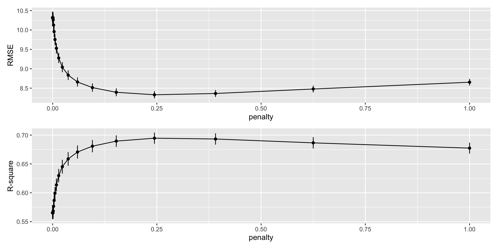
ผลการ tune hyperparameter พบว่าเราน่าจะได้โมเดลที่ดีที่สุด ณ penalty ประมาณเกือบ 0.25 โดยมีค่า RMSE และ R2 ประมาณ 8 กับ 70% ตามลำดับ
#### --- เลือก best ของ glmnet
best_glmnet <- glmnet_tuned_results |>
select_best(metric = "rmse")
### finalized workflow
##### -- เอา training data ทั้งหมดมา train แต่ละโมเดลใหม่ และเปรียบเทียบประสิทธิภาพบน test_data ทั้งหมดนี่สามารถทำได้พร้อมกันผ่าน `last_fit()`
### --- lastfit lm
last_lm <- lm_wf |>
last_fit(split)
### ----- lastfit glmnet
lm_perform <- last_lm |> collect_metrics()
last_glmnet <- glmnet_wf |>
finalize_workflow(best_glmnet) |>
last_fit(split)## performance in test data
glmnet_perform <- last_glmnet |> collect_metrics()
last_glmnet |> collect_predictions() |>
ggplot(aes(x= ach, y=.pred))+
geom_point()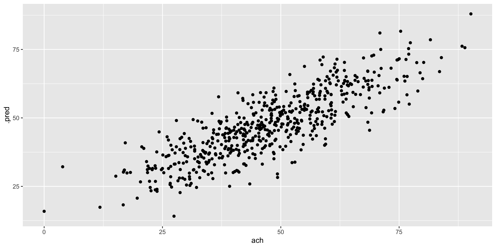
lm_perform |>
mutate(model = "lm") |>
bind_rows(glmnet_perform |> mutate(model = "glmnet")) |>
ggplot(aes(x=model, y=.estimate))+
geom_col(aes(fill = model))+
geom_text(aes(label = round(.estimate,4)), col = "white", vjust = 2)+
facet_wrap(~.metric ,nrow = 2, scales = "free_y")+
scale_fill_manual(values = c("steelblue","maroon"))+
ylab("\n Estimated Performance \n")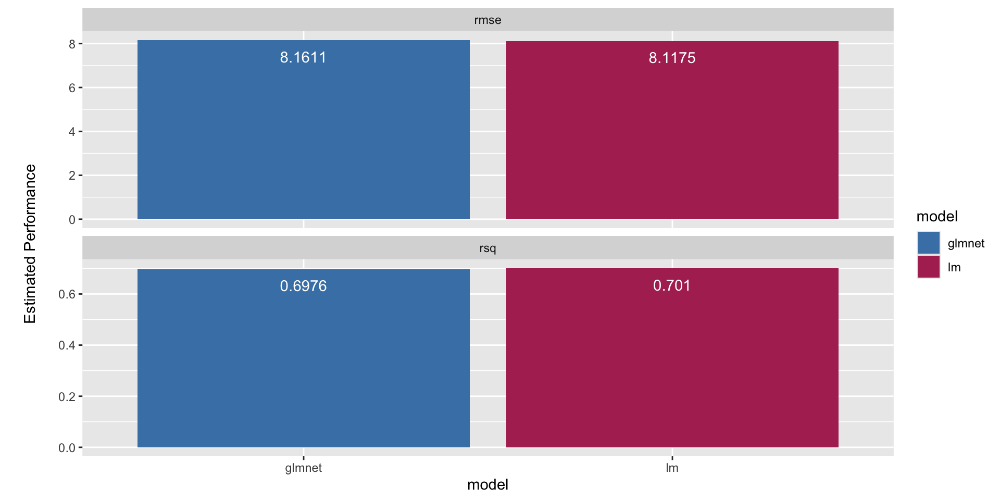
Feature Extraction
-
create new features from the predictors that capture the information in the broader set as a whole.
Principal Component Regression (PCR)
Partial Least Squares Regression (PLS)
Kernel PCA (KPCA)
Isometric Mapping (ISOMAP)
uniform manifold approximation and projection (UMAP)
Feature Extraction: PCR & PLS
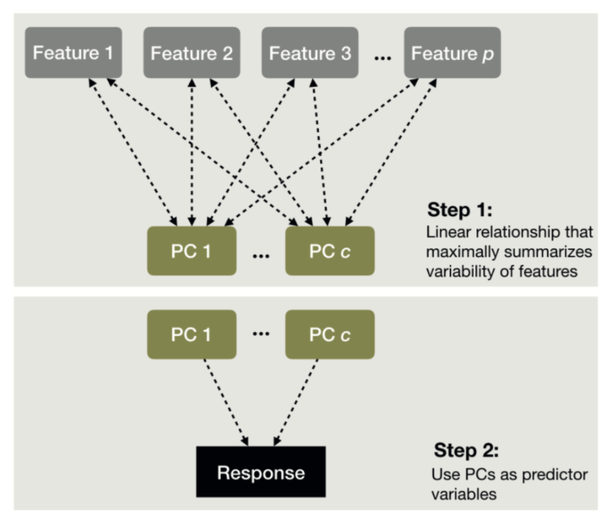
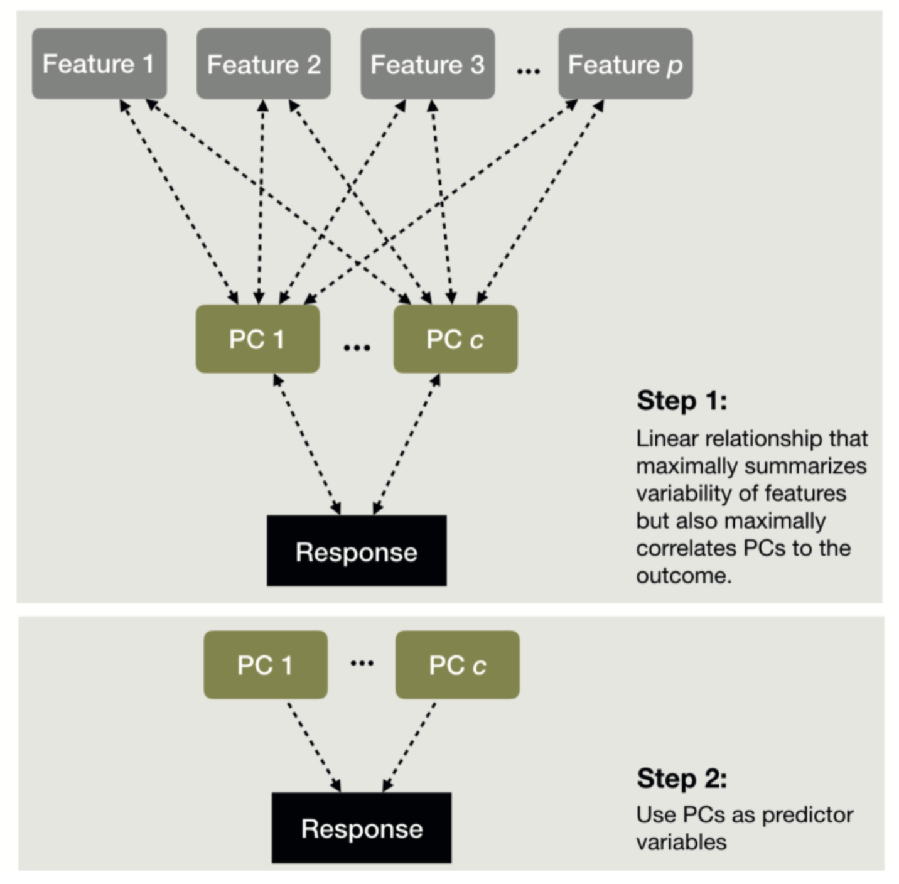
Boehmke, & Greenwell, 2020
step_pca() ใน tidymodels
step_pca() รวมทั้ง technique อื่น ๆ ในกลุ่มนี้สามารถใช้ได้ทั้งในงานแบบ supervised และ unsupervied learning
Unsupervised Task
ลองทำ unsupervised เพื่อทำความเข้าใจตัวแปรในชุดข้อมูล learningdata_csv โดยจะใช้ training data จากกิจกรรมก่อนหน้า
Rows: 2,270
Columns: 22
$ student.id <dbl> 7, 10, 16, 23, 25, 42, 44, 60, 63, 69, 70, 71, 81, …
$ school.type <chr> "Public", "Public", "Public", "Public", "Public", "…
$ gender <chr> "หญิง", "ชาย", "ชาย", "หญิง", "ชาย", "หญิง", "ชาย", "ช…
$ location <chr> "ภาคเหนือ", "ภาคกลาง", "ภาคเหนือ", "ภาคตะวันออกเฉียงเหนื…
$ ach <dbl> 14.793349, 30.388422, 14.081515, 30.045526, 31.7101…
$ learn.style <chr> "เรียนผ่านการอ่าน-เขียน", "เรียนผ่านการลงมือทำ", "เรียนผ่านก…
$ study.hr <dbl> 5.7, 2.1, 4.1, 9.7, 6.6, 0.8, 6.3, 1.3, 5.3, 6.1, 4…
$ extra.act <chr> "กีฬา", "ชมรมวิชาการ", "กีฬา", "กีฬา", "ศิลปะ", "ชมรมวิชา…
$ extra.act.hr <dbl> 0.9, 3.7, 0.2, 1.4, 0.9, 1.6, 2.6, 1.6, 0.9, 2.7, 1…
$ self.esteem <dbl> 6.1, 2.5, 3.9, 2.7, 11.7, 5.8, 0.1, 6.6, 6.5, 4.3, …
$ social.skill <dbl> 2.1, 5.0, 4.3, 5.4, 9.9, 10.4, 5.3, 7.0, 4.8, 8.1, …
$ satisfac <dbl> 1, 1, 1, 2, 3, 4, 3, 3, 2, 4, 2, 2, 2, 2, 2, 1, 1, …
$ sch.belong_ordinal <dbl> 1, 1, 1, 2, 3, 5, 3, 2, 1, 1, 1, 3, 1, 1, 1, 1, 1, …
$ sch.absent <dbl> 14, 11, 17, 10, 6, 11, 12, 19, 13, 14, 17, 20, 8, 2…
$ par.involv_ordinal <dbl> 1, 1, 1, 2, 3, 1, 2, 1, 1, 1, 1, 1, 1, 1, 1, 1, 1, …
$ motiv_ordinal <dbl> 1, 1, 1, 1, 3, 4, 1, 1, 1, 1, 1, 1, 1, 1, 1, 1, 1, …
$ acad.goal <chr> "ยังไม่มีเป้าหมายชัดเจน", "เพื่อสำเร็จการศึกษาขั้นพื้นฐาน", "เพื่อ…
$ time.manage1 <dbl> 8.3, 9.1, 10.4, 10.0, 12.4, 5.6, 11.6, 7.0, 11.8, 9…
$ time.manage2 <dbl> 0.3, 1.6, 0.3, 7.9, 11.4, 1.6, 4.1, 0.4, 4.5, 2.2, …
$ acad_axiety <dbl> 1.4, 2.2, 1.4, 2.8, 3.0, 3.6, 2.6, 2.8, 2.6, 4.0, 2…
$ teach_sup <dbl> 2.8, 1.0, 2.4, 2.8, 3.2, 3.6, 2.2, 2.6, 3.0, 2.8, 1…
$ lrn_environ <dbl> 1.0, 1.2, 1.0, 3.0, 2.8, 4.0, 1.8, 3.0, 1.8, 4.0, 2…pca_trained <- recipe(ach ~ ., data = train_data) |>
update_role(student.id, new_role = "id") |>
step_mutate(
across(c(ends_with("ordinal"), "satisfac"), ~factor(.))
) |>
step_normalize(all_numeric_predictors()) |>
step_pca(all_numeric_predictors(), threshold = 0.7) |>
prep()
## create scree plot to determine PCA
pca_trained |>
tidy(3, type = "variance") |>
filter(terms == "variance") |>
ggplot(aes(x=component, y=value))+
geom_col()+
ggtitle("scree plot")+
scale_x_continuous(breaks = 1:10)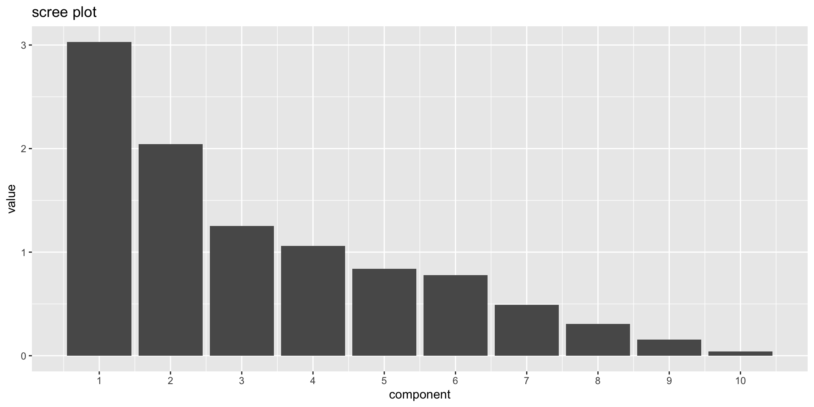
## create scree plot with cumulative percent variance
pca_trained |>
tidy(3, type = "variance") |>
filter(str_detect(terms, "percent")) |>
ggplot(aes(x=component, y=value,col = terms))+
geom_line()+
geom_point()+
geom_hline(yintercept = 70, linetype = 2)+ ## สมมุติกำหนด cut-off (threshold) เท่ากับ 70%
theme(legend.position = "top")+
labs(col = "")+
scale_x_continuous(breaks = 1:10)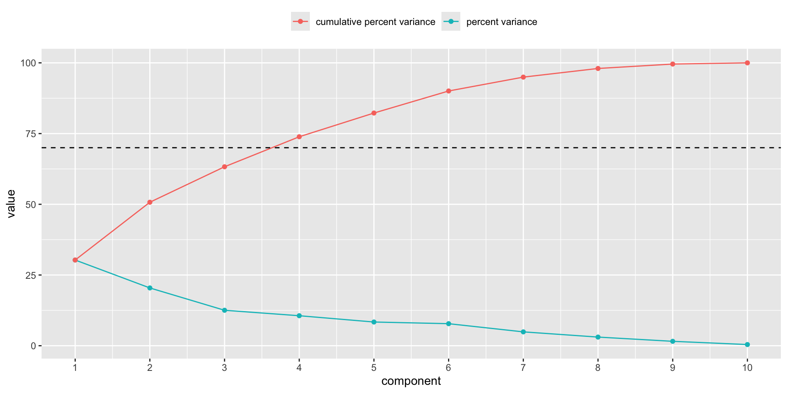
จาก cut-off ที่กำหนดแสดงว่าควรมีองค์ประกอบหลัก 4 องค์ประกอบ เราสามารถตีความความหมายขององค์ประกอบหลักได้จาก loading ระหว่างตัวแปรต้นฉบับกับองค์ประกอบหลักของแต่ละองค์ประกอบ
## create loading plot
pca_trained |>
tidy(3, type = "coef") |>
filter(component %in% paste0("PC",1:4)) |>
ggplot(aes(x=value, y=terms))+
geom_col(aes(fill = value))+
geom_vline(xintercept = c(-0.3,0.3), linetype = 2)+
facet_wrap(~component) +
scale_fill_gradient2(low = "maroon", mid = "white", high = "steelblue")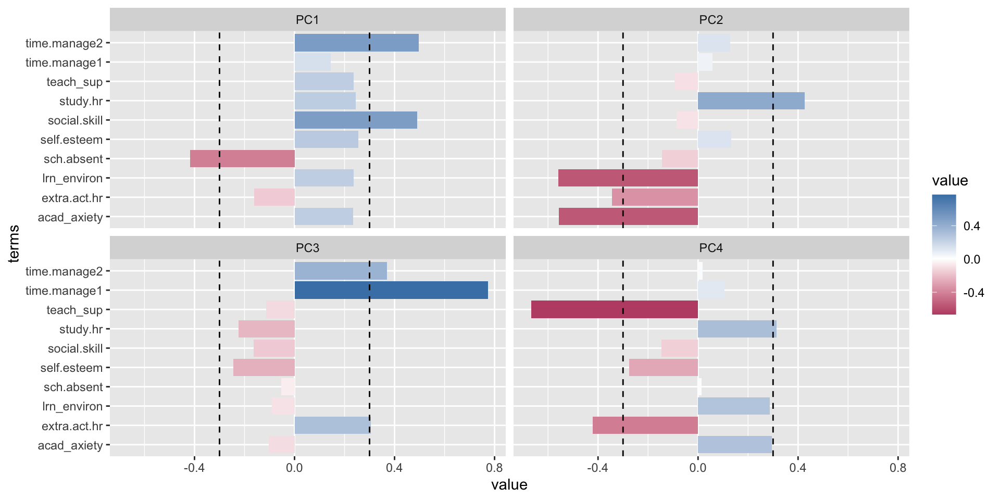
องค์ประกอบทั้ง 4 ควรมีความหมายว่าอย่างไร?
หากเราพอใจความหมายขององค์ประกอบทั้ง 4 แล้ว เราสามารถสร้างคะแนนองค์ประกอบได้ง่าย ๆ โดยใช้ juice() หรือ bake() ขึ้นอยู่กับว่าเราจะสร้างคะแนนบน train หรือชุดข้อมูลอื่น ๆ
ลองพิจารณาชุดข้อมูลด้านล่างจะเห็นว่าเมื่อ juice() หรือ bake() ตัวแปรเชิงปริมาณที่นำไปสร้าง scale องค์ประกอบจะหายไปหมด แทนที่ด้วยคะแนนองค์ประกอบ 4 ตัวที่เราเลือกมาแทน
Rows: 2,270
Columns: 16
$ student.id <dbl> 7, 10, 16, 23, 25, 42, 44, 60, …
$ school.type <fct> Public, Public, Public, Public,…
$ gender <fct> หญิง, ชาย, ชาย, หญิง, ชาย, หญิง, ช…
$ location <fct> ภาคเหนือ, ภาคกลาง, ภาคเหนือ, ภาคต…
$ learn.style <fct> เรียนผ่านการอ่าน-เขียน, เรียนผ่านการล…
$ extra.act <fct> กีฬา, ชมรมวิชาการ, กีฬา, กีฬา, ศิลปะ…
$ satisfac <fct> 1, 1, 1, 2, 3, 4, 3, 3, 2, 4, 2…
$ sch.belong_ordinal <fct> 1, 1, 1, 2, 3, 5, 3, 2, 1, 1, 1…
$ par.involv_ordinal <fct> 1, 1, 1, 2, 3, 1, 2, 1, 1, 1, 1…
$ motiv_ordinal <fct> 1, 1, 1, 1, 3, 4, 1, 1, 1, 1, 1…
$ acad.goal <fct> ยังไม่มีเป้าหมายชัดเจน, เพื่อสำเร็จการศึ…
$ ach <dbl> 14.793349, 30.388422, 14.081515…
$ PC1 <dbl> -3.59205790, -4.04056117, -3.77…
$ PC2 <dbl> 2.72013725, 0.60791136, 2.58886…
$ PC3 <dbl> -0.6565458, 1.1164666, -0.10549…
$ PC4 <dbl> -0.65312628, 0.78128625, 0.1450…Supervised Task
ใช้ syntax ที่ส่งให้ในคาบ
Feature Extraction: Kernal PCA
แปลงข้อมูล: ใช้ kernel function เพื่อแปลงข้อมูลจากพื้นที่เดิมที่อาจมีความซับซ้อนไปสู่พื้นที่มิติสูงกว่า
ลดมิติและจำแนกข้อมูล: ดำเนินการ PCA ในพื้นที่ใหม่ที่แปลงแล้วเพื่อหาตัวแปรใหม่ (principal components) ที่สามารถอธิบายความแปรปรวนและจำแนกข้อมูลได้อย่างมีประสิทธิภาพ
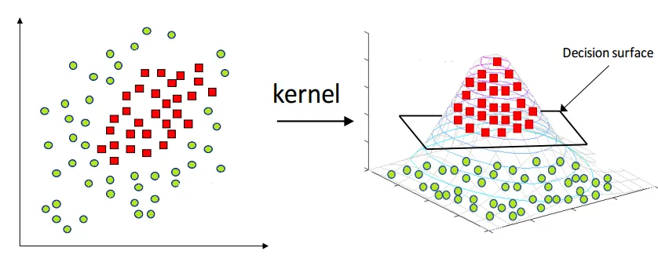
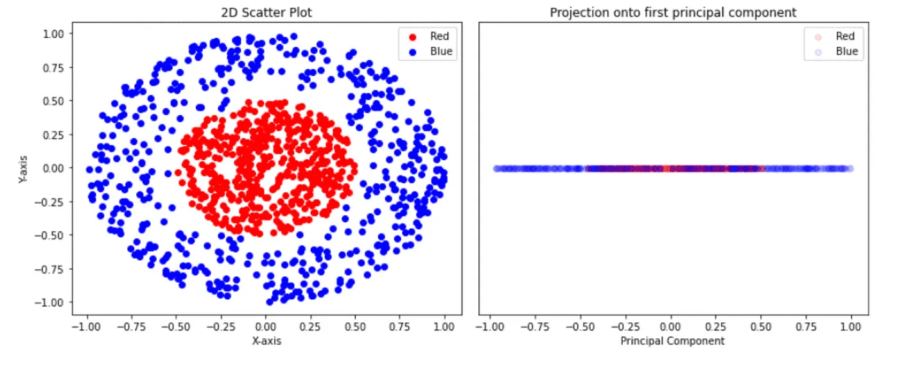
https://medium.com/@avicsebooks/part17-unsupervised-machine-learning-kernel-principal-component-analysis-and-multidimensional-5c9eec755bd3
https://medium.com/@zxr.nju/what-is-the-kernel-trick-why-is-it-important-98a98db0961d
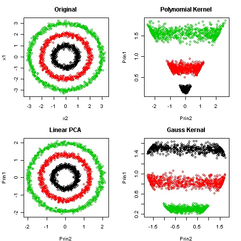
https://medium.com/@zxr.nju/what-is-the-kernel-trick-why-is-it-important-98a98db0961d
Subsampling for Imbalance Class Problem
ในปัญหา classification ปัญหาหนึ่งที่ผู้วิเคราะห์มักพบคือ imbalance class ซึ่งจะเกิดขึ้นเมื่อสัดส่วนของ category ในตัวแปรตามมีความแตกต่างกันอย่างมาก
ปัญหาดังกล่าวจะทำให้อัลกอริทึมการเรียนรู้ มีต้นแบบการเรียนรู้จากกลุ่มที่เป็น majority มากเกินไปจนผลการเรียนรู้ที่ได้มีความลำเอียง
การแก้ปัญหาดังกล่าวสามารถทำได้ โดย
-
Downsampling – สุ่มข้อมูลออกจา majority class จนกระทั่งสมดุลกับ minority class
Random majority under-sampling with replacement :
step_downsample()NearMiss-1:
step_nearmiss()Extraction of majority-minority Tomek links:
step_tomek()
-
Upsampling – สร้างข้อมูลสังเคราะห์ (synthetic data) สำหรับ minority class เพื่อให้มีจำนวนข้อมูลมากขึ้นจนสมดุลกับ majority class
Random minority over-sampling with replacement:
step_upsample()Synthetic Minority Over-sampling Technique (SMOTE):
step_smote()Borderline SMOTE (B-SMOTE):
step_bsmote()Adaptive synthetic sampling approach for imbalanced learning (ADASYN):
step_adasyn()Generation of synthetic data by Randomly Over Sampling Examples (ROSE):
step_rose()
-
Hybrid sampling – downsampling ใน majority class และ upsampling ใน minority class
SMOTE + Tomek
B-SMOTE + Tomek
ROSE + downsample
https://github.com/tidymodels/themis
SMOTE
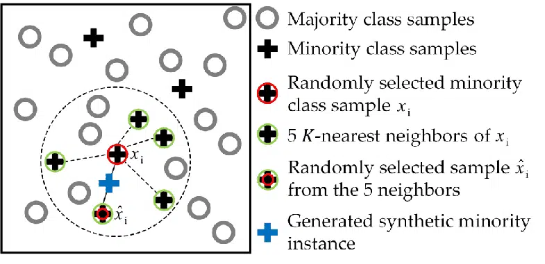
SMOTE Concept: https://rikunert.com/smote_explained>
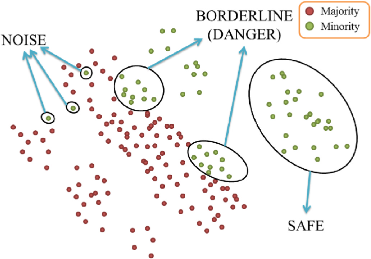
BSMOTE Concept: https://www.researchgate.net/figure/Specific-groups-of-imbalanced-data-in-the-Borderline-SMOTE_fig2_365584195
Tomek link
ลบ majority class ที่อยู่ใกล้กับ minority class มากที่สุดออก
ค้นหาคู่ข้อมูลที่เป็น tomek link
ลบข้อมูล
ประเมินผล
https://www.kaggle.com/code/marcinrutecki/smote-and-tomek-links-for-imbalanced-data
Variable Transformation
ใน library-recipe มี step_mutate() ที่ทำงานเหมือนกับ mutate() ใน dplyr
original
recipe

week 4: 2758623 Machine Learning Principles and Application
ผศ.ดร.สิวะโชติ ศรีสุทธิยากร